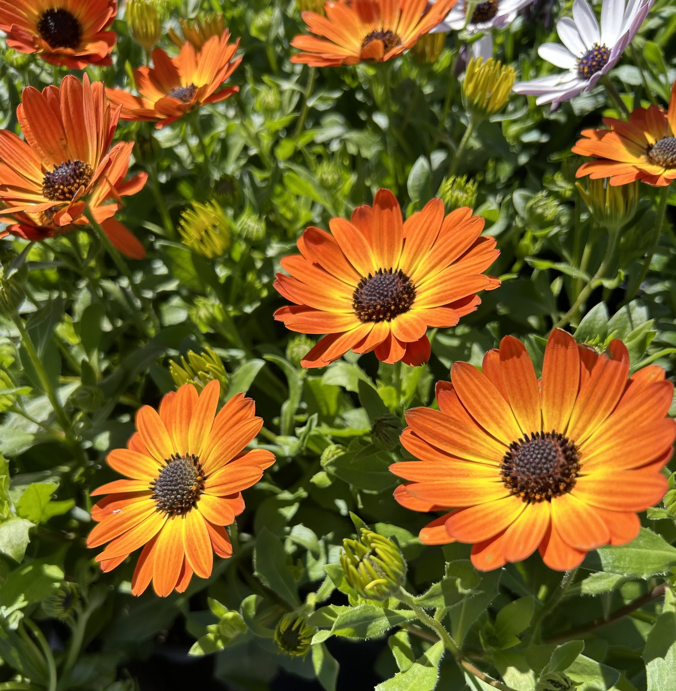

African Daisy is a colorful flowering plant known for its bright petals and daisy-like appearance. It is commonly grown as an ornamental flower in gardens, pots, and landscapes. African Daisies bloom beautifully under sunlight and are popular for adding vibrant colors to outdoor spaces.
Needs full sunlight (6–8 hours daily) for healthy growth and vibrant blooms.
Water moderately and allow soil to dry slightly between watering.
Best growth at 18°C – 28°C. Prefers warm and sunny environments.
Use well-draining fertile soil mixed with compost or organic matter.
Flowers bloom continuously during warm seasons with proper care and sunlight.
Used for garden decoration, landscaping, flower beds, and colorful potted displays.
Cause: Overwatering or poor drainage.
Solution: Reduce watering and improve soil drainage.
Cause: High humidity and poor airflow.
Solution: Improve ventilation and avoid wetting leaves.
Cause: Common garden insect pests.
Solution: Use natural pest control or remove insects manually.
Cause: Insufficient sunlight or nutrients.
Solution: Provide full sunlight and fertilizer regularly.
Cause: Excessive watering or nutrient imbalance.
Solution: Adjust watering schedule and improve soil nutrients.